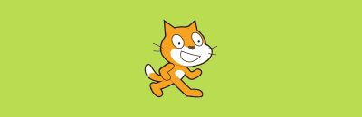
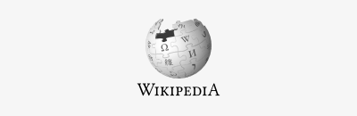
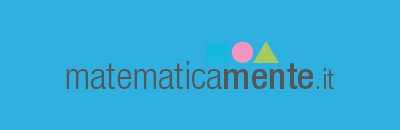

Wir leben heute im digitalen Zeitalter der Innovation und der Technologie.
Wir leben aber auch im Zeitalter der entsprechenden Missbräuche, der systematischen Verstöße gegen das Grundrecht der Privacy,
verübt durch jene, die diese Kanäle kontrollieren.
Wir leben im Zeitalter der Verschwendung von Humankapital und Finanzkraft, bedingt durch den Einsatz von kommerziellen Produkten, die als "Innovation" verkauft werden.
Wir schlagen ein anderes Modell vor! Ein Modell, das die Chancen, welche die Technologie bietet, bewusst nutzt.
Ein Modell, das offen, gemeinschaftlich und zugänglich ist. Ein Modell,
das auf Methoden baut und nicht auf Werkzeuge.
Wir beginnen mit der Schule von heute für die Generation von morgen.
WiiLDOS ist eine Linux-Distribution von Lehrern für Lehrer entwickelt.
Inhalte und Anwendungen sind spezifisch für die Didaktik ausgelegt.
Diese Distribution wird durch das gleichnamige WiiLD Team unterstützt,
eine Mailingliste mit 1000 Mitgliedern von Lehrern und Technikern, die täglich Neuigkeiten, Rezensionen über neue Programme
und Internetseiten austauschen, und sich gegenseitig zu helfen.

Scratch ist ein wichtiger Bezugspunkt, wenn es darum geht Programmierung zu lehren. Der einfach gestaltete visuelle Editor ermöglicht es Spiele zu erstellen, indem die logischen Grundelemente zusammengefügt werden. So erhält man ein intuitives und umgehendes Erlebnis. Vom MIT in Boston entwickelt, zählt Scratch eine Community von tausenden Benutzer weltweit.

Wikipedia ist nicht nur die größte Enzyklopädie der Welt, sondern aufgrund ihrer parallelen Plattformen, auch ein unerschöpfliches Sammelbecken von Inhalten; Texte, Bilder, Foto, Bücher, Daten; alles mit offener Lizenz zur Verfügung gestellt und deshalb bei jeder Gegebenheit einsetzbar. Die große Community dahinter, die aus Fachkundigen, wie auch aus Schülern und Lehrern besteht, prüft und bewertet auf schnellem Wege jede veröffentlichte Information.

Die Reihe C3 enthält etliche Schulbücher, die alle durch Zusammenarbeit von Lehrern entstanden sind und unter der Creative Commons Lizenz verteilt werden. Die Texte können heruntergeladen, bei Bedarf geändert, digital eingesehen, oder auch bei der nächsten Druckerei gedruckt werden.